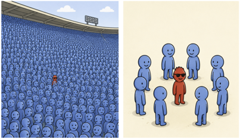
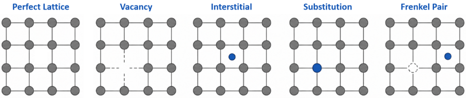
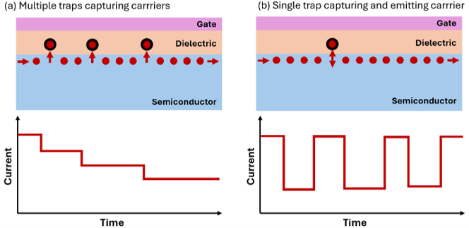
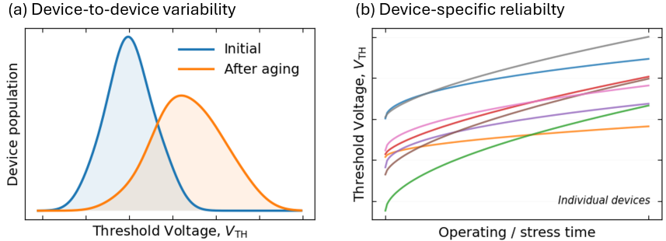

End of Statistical Averaging
The electrical response of a transistor is determined by carrier transport through a channel that inevitably contains defects. In older technology generations, the relatively large device area resulted in a large defect population, and the contribution of any single defect was averaged over many similar perturbations. The measured response therefore represented an ensemble-averaged behavior rather than the influence of a particular defect. As we enter the nanoscale era, the number of defects within each transistor decreases significantly, reducing the effect of statistical averaging. Under these conditions, the dynamics of a single defect can produce a measurable change in the device characteristics, marking the transition from an ensemble-dominated behavior to a defect-resolved behavior.

The Imperfect Nature of Semiconductors
The ideal semiconductor crystal is often represented as a perfectly ordered and periodic arrangement of atoms. In reality, however, such structural perfection cannot be achieved. Imperfections are introduced during crystal growth, material processing, and the numerous fabrication steps required to form a semiconductor device. The resulting defects are therefore an inherent part of any real semiconductor structure rather than simply an indication of an imperfect fabrication process.
At the atomic level, defects can take several forms. Figure 2 illustrates some common examples of point defects, including vacancies, interstitials, substitutional impurities, and more complex configurations such as Frenkel pairs [1]. A vacancy corresponds to a missing atom at an otherwise occupied lattice site, whereas an interstitial introduces an additional atom between regular lattice positions. Foreign atoms may also occupy lattice sites as substitutional impurities, either intentionally through doping or unintentionally as a consequence of material processing. In a Frenkel pair, an atom is displaced from its original lattice position and occupies an interstitial site, leaving behind a corresponding vacancy.
Despite their atomic dimensions, defects can modify the local bonding environment and disturb the periodic potential of the crystal. The resulting changes in electronic structure depend on the type and location of the defect. Some remain electrically inactive, while others introduce localized states capable of interacting with charge carriers.

Point defects represent only one class of imperfections in semiconductor devices. Defects can also occur at material boundaries, particularly at the semiconductor–dielectric interface and within the gate dielectric of MOS structures. Their proximity to the conducting channel makes these defects especially important for device operation. How such defects become electrically active is discussed in the following section.
The defect population depends strongly on both the material system and the fabrication process, with steps such as implantation, annealing, oxidation, and dielectric deposition influencing its final distribution. Consequently, even devices fabricated on the same wafer contain different microscopic defect populations. At nanoscale dimensions, where only a few electrically active defects may be present, these differences can translate directly into measurable device-to-device variations.
When Defects Become Electrically Active
Not all structural defects influence the electrical behavior of a transistor. A defect becomes electrically active when it introduces an electronic energy level within the semiconductor bandgap that can exchange charge with the surrounding material. These electrically active defects, commonly referred to as traps, are predominantly located at the semiconductor–dielectric interface or within the gate dielectric in close proximity to the interface, where they readily interact with carriers flowing through the channel.
The electrical behavior of a trap is governed by its occupancy. An initially empty trap may capture an electron or hole from the channel, becoming charged, while an occupied trap may subsequently release the carrier and return to its original state. Every capture or emission event changes the charge state of the trap, producing a localized electrostatic perturbation that modifies the electrostatic potential experienced by carriers flowing beneath the gate. Although the trap itself occupies only an atomic-scale region, its influence extends well beyond its physical dimensions through long-range Coulomb interactions, enabling even a single defect to measurably perturb carrier transport.
Figure 3 illustrates two conceptual examples of how charge trapping influences transistor operation. When multiple traps successively capture carriers as shown in Figure 3(a), progressively increasing the number of occupied traps near the semiconductor–dielectric interface. Each newly occupied trap contributes an additional electrostatic perturbation, resulting in a cumulative reduction of the channel current. This behavior forms the physical basis of bias temperature instability (BTI) [2], where the gradual occupation of traps under electrical stress leads to a time-dependent degradation of the transistor characteristics. In practice, trapping and de-trapping events occur continuously over a broad distribution of time constants, giving rise to a more complex response than the simplified illustration presented here.

As transistor dimensions continue to shrink, the number of electrically active traps within an individual device decreases significantly. Under these conditions, the electrical response may become dominated by the activity of a single trap, as illustrated in Figure 3(b). The repeated capture and emission of a carrier causes the trap to alternate between different charge states, producing reversible transitions between discrete current levels. This phenomenon is commonly referred to as random telegraph noise (RTN) [3], where the stochastic activity of a single trap becomes directly observable in the electrical characteristics of the device.
Although BTI and RTN are often studied as separate phenomena, they originate from the same fundamental process of charge trapping and de-trapping by electrically active defects. The primary distinction lies in the number of active traps and their capture and emission dynamics. When many traps collectively contribute to the device response, their cumulative effect manifests as gradual parameter degradation and aging. Conversely, when only one or a few traps dominate the response, the electrical signature of individual defects becomes directly observable. Understanding this common physical origin is fundamental to explaining both the variability and long-term reliability of modern nanoscale semiconductor devices.
Reliability and Variability: Two Sides of the Same Coin
Reliability and variability are traditionally treated as two distinct aspects of an electronic device. Reliability concerns the gradual evolution of their electrical characteristics during operation, whereas variability describes the differences observed between nominally identical devices. At nanoscale dimensions, this separation becomes increasingly difficult to maintain. When only a small number of electrically active defects are present, the particular defect configuration of each transistor can influence not only its initial characteristics, but also how those characteristics evolve with time.
Figure 4 illustrates this relationship using the threshold voltage, $V_{\mathrm{TH}}$, as a representative device parameter. As shown in Figure 4(a), nominally identical transistors already exhibit a distribution of after fabrication. During operation, electrically active defects respond to electrical and thermal stress, shifting the threshold voltage and moving the device population away from its initial distribution. This shift represents reliability degradation at the population level.
The situation becomes particularly important when the individual devices responsible for this distribution are considered. Figure 4(b) shows that each transistor can follow its own degradation trajectory. Since the number, location, and dynamics of active defects differ from device to device, the resulting shift is not identical across the population. Some devices may remain comparatively stable, while others undergo substantially larger changes under the same operating conditions. What appears as a distribution at the population level is therefore the collective outcome of many individual and increasingly defect-specific histories.

Reliability and variability thus become closely intertwined in nanoscale technologies [4]. Reliability determines how the device population evolves with time, while the stochastic nature of individual defects determines how differently its members evolve. Both are therefore closely coupled at nanoscale dimensions. The relevant question is no longer only how much an average transistor degrades, but also how differently individual transistors may evolve under the same operating conditions. This shift from deterministic, population-averaged degradation toward increasingly stochastic and device-specific behavior places the statistics of individual devices at the center of modern reliability assessment.
Conclusion
Semiconductor defects have always influenced device behavior, but technology scaling has fundamentally changed their significance. As statistical averaging diminishes at nanoscale dimensions, the electrical response can become governed by only a few, or even a single, electrically active defect. Consequently, microscopic trapping events can produce measurable electrical changes, contribute to device-to-device variability, and influence how individual transistors degrade over time. Understanding the properties and dynamics of individual defects is therefore becoming increasingly important for predicting the performance and reliability of modern semiconductor technologies.
References
- R. De Souza and G. Harrington, “Revisiting point defects in ionic solids and semiconductors,” Nature Materials, vol. 22, pp. 794–797, 2023.
- T. Grasser, Ed., Bias Temperature Instability for Devices and Circuits. New York, NY, USA: Springer, 2014.
- M. J. Uren, D. J. Day, and M. J. Kirton, “1/f and random telegraph noise in silicon metal-oxide-semiconductor field-effect transistors,” Applied Physics Letters, vol. 47, no. 11, pp. 1195–1197, 1985.
- R. Hussin et al., “Interplay Between Statistical Variability and Reliability in Contemporary pMOSFETs,” IEEE Transactions on Electron Devices, vol. 61, no. 9, pp. 3265–3273, 2014.